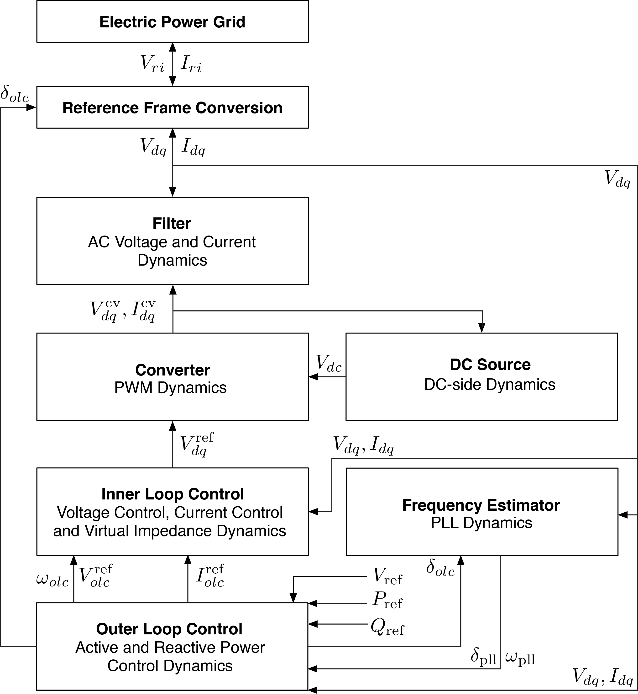

Inverter Models
Here we discuss the structure and models used to model inverters in LITS.jl. Each inverter is a data structure that is defined by the following components:
- DC Source: Defines the dynamics of the DC side of the converter.
- Frequency Estimator: That describes how the frequency of the grid can be estimated using the grid voltages. Typically a phase-locked loop (PLL).
- Outer Loop Control: That describes the active and reactive power control dynamics.
- Inner Loop Control: That can describe virtual impedance, voltage control and current control dynamics.
- Converter: That describes the dynamics of the pulse width modulation (PWM) or space vector modulation (SVM).
- Filter: Used to connect the converter output to the grid.
The following figure summarizes the components of a inverter and which variables they share:
⠀
Contrary to the generator, there are many control structures that can be used to model inverter controllers (e.g. grid-following, grid feeding or virtual synchronous machine). For this purpose, more variables are shared among the components in order to cover all these posibilities.
Models are based from the paper: "A Virtual Synchronous Machine implementation for distributed control of power converters in SmartGrids" from S. D'Arco, J.A. Suul and O.B. Fosso, and structures are defined in PowerSystems.jl abbreviated as PSY.
DC Source
This component can be used to model the dynamics of the DC side of the converter.
Fixed DC Source [PSY.FixedDCSource]
This is a model that set the DC voltage to a fixed value $v_{\text{dc}} = v_{\text{dc}}^{\text{fix}}$.
Frequency Estimators
This component is used to estimate the frequency of the grid based on the voltage at the bus.
Phase-Locked Loop (PLL) for VSM [PSY.PLL]
The following equations present a PLL used to estimate the frequency and PLL angle of the grid. There are two reference frames considered in this inverter. Those are the VSM of the outer-loop control $\delta\theta_{\text{olc}}$ and the PLL one $\delta\theta_{\text{pll}}$. The notation used a $\delta\theta$ to refer as the variation of the respective angle $\theta$ with respect to the grid SRF (instead of the fixed $\alpha$ component of the $\alpha\beta$ transformation):
with
Outer Loop Controls
This component defines controllers for both active and reactive power
Virtual Inertia and Q-droop [PSY.OuterControl]
The following model represent a virtual synchronous machine model to represent how active power is going to be deployed. The constructor is PSY.OuterControl{PSY.VirtualInertia, PSY.ReactivePowerDroop}. It defines a new SRF denoted as $\theta_{\text{olc}}$ for the active power controller and uses a simple voltage droop for dispatching reactive power:
with
Inner Loop Controls
This component defines voltage and current controllers to generate the reference signal for the converter.
Integrated Virtual Impedance, Voltage and Current Controller [PSY.CombinedVIwithVZ]
The following model receives both the outer loop control frequency and reference voltage signal to generate the reference signal for the converters. The virtual impedance plays a similar role of the impedance of a synchronous generator. A PI voltage controller is used to generate the current signal that is used in the PI current controller to finally generate the voltage reference signal for the converters.
with
Converter
This component can be used to model the dynamics of the switching process.
Average Model [PSY.AvgCnvFixedDC]
The average model simply output the desired reference signal since:
where $m_{dq}$ is the modulation signal, and $v_{dq}^{\text{ref-signal}}$ is the voltage reference signal from the inner loop control.
Filters
LCL Filter [PSY.LCLFilter]
A standard LCL filter is proposed to connect the output of the converter to the grid. In this case, $v_d$ and $v_q$ are voltages in the capacitor, while $v_d^{\text{grid}}$ and $v_q^{\text{grid}}$ represent the voltage at the bus. The L filter after the capacitor can also include a step-up transformer to increase the voltage, that is model as an extra impedance.
Reference
For constructors check the API on PowerSystems.jl documentation